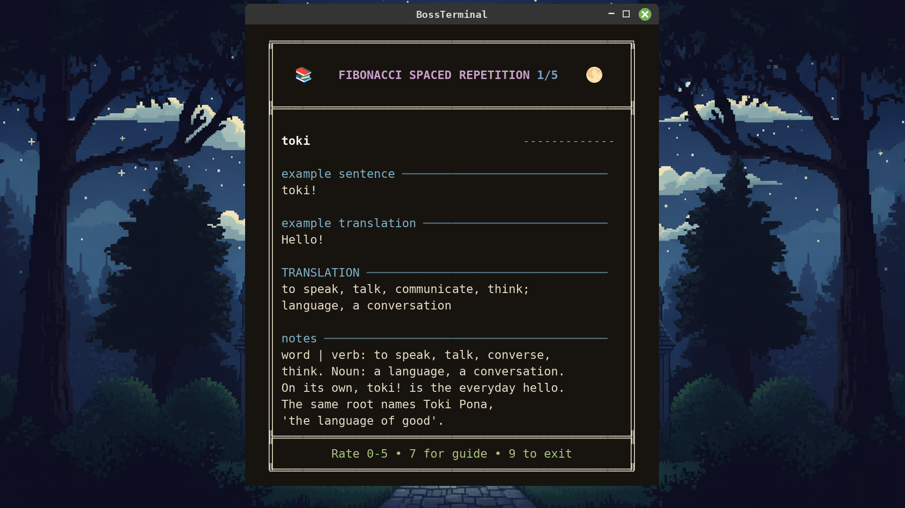

全程可用简体中文游玩
每张卡片都有简体中文的翻译与注释，13 节课程全部有简体中文版，界面同样支持简体中文——不需要英语。只靠 Toki Pona（道本语）和中文，就能从第一张卡片走到最后一张。
- 500 张卡片全部配有简体中文的翻译、例句翻译与注释（Notes）
- 13 节语法课程全部有简体中文版
- 界面支持英语、德语、西班牙语、日语与简体中文
- 语言只需设置一次，整个卡包都会跟随
整门语言，而非一角切片
toki pona——良善的语言。
Toki Pona（道本语）是一门作为极简主义实验而建造的人工语言：约 140 个单词，词语之下藏着一个问题——手里几乎一无所有时，你能说出多少？没有要变位的时态，没有要背的词性，没有任何不规则。拼写即发音：照着念出来，就念对了。
剩下的是组合。tomo tawa，会移动的建筑，是汽车。ilo toki，会说话的工具，是电话。正因词汇如此之小，每个单词都必须伸展：pona 同时是好、简单、有用与友善。你不再伸手去够那个精确的词，而是开始决定自己究竟想说什么——这正是整场练习的要点。
大多数语言大到学不完。这一门不是。FlashBoss 用 500 张卡片、22 个集群、5 个层级教完它的全部：178 个单词条目——课程所教的每个实词和每个语法助词，书中词汇加上凭实力站到它们身旁的社区词——250 个复合词组，以及由它们组成的 72 个句子。
最初的单词、人与代词、好与坏、想要与到来。
工作与出身、情感与食物、家与工具、给予与游戏。
睡眠与阳光、道路与书籍、数字与金钱、声音与社群。
死亡与轮回、天空与空气、身体与黑暗、热与草木、果实与家庭。
月亮与衣物、颜色与生灵、飞鸟与走兽——还有奖励单词。
五个层级，二十二个集群
每个集群都以一场头目战收尾。打赢之后，那些卡片就永远退出你的每日复习。
| 层级 | 集群 | 卡片 | 你会遇见什么 |
|---|---|---|---|
| 层级 1 | 4 | 86 | 最初的单词、人与代词、好与坏、想要与到来。7 节语法课程落在这里——第一天你就在造句。 |
| 层级 2 | 4 | 91 | 工作与出身、情感与食物、家与工具、给予与游戏。 |
| 层级 3 | 4 | 91 | 睡眠与阳光、道路与书籍、数字与金钱、声音与社群。 |
| 层级 4 | 5 | 114 | 死亡与轮回、天空与空气、身体与黑暗、热与草木、果实与家庭。 |
| 层级 5 | 5 | 118 | 月亮与衣物、颜色与生灵、飞鸟与走兽，以及来自书外的两个奖励单词集群。 |
| 合计 | 22 | 500 | 一个卡包。一门完整的语言。 |
难度层层递进
例句的复杂度随层级逐级上升。
- mi jan pona sina.我是你的朋友。
- sina wile e pona la, sina o pali.如果你想要美好的事物，就应当为之付出劳动。
- jan pi sona pona li toki e nasin pona tawa jan lili.智慧的人向孩子们讲述善道。
- jan sona li sona e ni: ona li sona ala e ale.智者知道这一点：自己并非无所不知。
- telo li tawa anpa lon nasin ale.无论走哪条路，水总是向下流。
两个小词，一个新词
这里没有需要用颜色标记的词性——所以 FlashBoss 展示真正起作用的东西。修饰语永远跟在被修饰的词后面，而这一对合起来的意思，是任何一半都无法单独承担的。这个卡包里有 250 张卡片正是如此。
扛起其余一切的一小把单词
卡包中的 4 张卡片。点击翻面。
十三节课程，各守各的门
没有要先啃完的语法章节。每个助词都有一节课程，而那节课程恰好在该助词第一次出现的那张卡片处触发——规则在你需要的那一刻读到，绝不提前。
- 00欢迎来到 Toki Pona触发于 toki——第 1 张卡
- 01mi / sina 不需要「是」触发于 mi pona
- 02li——「是／做」的连接词触发于 jan
- 03o——命令与呼唤触发于 o
- 04pi——归拢修饰语触发于 pi
- 05修饰语在后触发于 jan pona
- 06如何提问触发于 seme
- 07前动词为动词着色触发于 wile
- 08la——设定场景触发于 ken la
- 09e——标记宾语触发于层级 2
- 10数字与寥寥几种颜色触发于 wan
- 11六个小小的介词触发于 poka
- 12nasin、pu 与 ku触发于 ku
不必绕道英语
每张卡片的翻译、例句翻译与注释都以全部五种语言承载——13 节课程页与围绕它们的界面也是如此。语言设置一次，整个卡包都会跟随。
它不花一分钱
不存在 Toki Pona DLC。没有任何东西需要加入购物车。
Toki Pona 与其他免费卡包一起，就在基本游戏之内。安装 FlashBoss，在语言列表中选中它，开始即可。它也没有前置卡包——可以与你的主线语言并行，也可以单独学习。
闪卡组成的完整系统
- 斐波那契间隔重复
- 每张卡片按 0–5 评分。一个单词记得越牢，它再次出现的间隔就越长——基于斐波那契数列的间隔重复。
- 头目战
- 22 个集群，每一个都由一场决斗把守。不直面并战胜你最棘手的单词，就无法取胜。
- 毕业
- 击败一个集群，它的卡片就永远退出你的每日复习。学得越多，卡组就越小。
- 复合的威力
- 卡包的一半是复合表达。你学会的每个实词都在做乘法——因为接下来的 250 张卡片，正是用你已经拥有的单词搭成的。
- 课程
- 13 节参考课程，各自在其助词首次出现的那张卡片处触发。
- 你的语言
- 500 张卡片全部带有简体中文的翻译与注释（还有德语、日语、西班牙语），13 节课程全部有简体中文版。界面同样支持这五种语言。
- TTS 语音
- 卡片可以朗读。Toki Pona 由游戏的神经语音合成引擎 piper1-gpl 朗读，使用本卡包指定的世界语语音——选它是因为这个语音恰好以 Toki Pona 使用的音素训练而成，14 个音全部原样发出，并保留这门语言要求的倒数第二音节重音。这是合成语音，不是真人录音。
开始之前
Toki Pona 真的免费吗？
是的。它是基本游戏内置的卡包之一——没有需要购买的 Toki Pona DLC，后面的层级也没有任何付费墙。500 张卡片和 13 节课程从第一次启动起就全部在场。
只用简体中文能玩吗？
完全可以。500 张卡片全部配有简体中文的翻译、例句翻译与注释（Notes），13 节课程全部有简体中文版。游戏界面支持英语、德语、西班牙语、日语与简体中文。不需要英语。
卡包里究竟有什么？
横跨 22 个集群、5 个层级的 500 张卡片：178 个单词条目——课程所教的每个实词和每个语法助词——外加 250 个复合词组和 72 个完整句子。开始之前，你可以先把整份单词表读一遍：请到单词表页面。
除了书中词汇，也覆盖社区词汇吗？
覆盖。主干是书中词汇，层级 5 载有后来站稳脚跟的单词——kijetesantakalu、tonsi、misikeke——最后以来自更远处的两个奖励词汇集群收尾：majuna（老的）、linluwi（网络）、isipin（沉思）、nimisin（新词或玩笑词）。最后一节课程会解释 pu 与 ku 的区别，所以你永远知道自己站在哪个房间里。
语法在哪里出现？
就在门口。共有 13 节课程，每一节都恰好在其助词第一次露面的那张卡片处触发——li 随 jan 而来，pi 随 pi，la 随 ken la。其中 8 节落在层级 1。想提前通读的话，请到课程页面。
能听到发音吗？
能——通过语音合成，而非真人录音。Toki Pona 共有 14 个音，本卡包用 FlashBoss 自带的世界语语音朗读它们。这个语音的音素集恰好完整覆盖这 14 个音，并保留这门语言要求的倒数第二音节重音。
需要先学完别的卡包吗？
不需要。Toki Pona 没有前置条件。它是一门独立成立的课程，而且小到可以放在你正在学的任何语言旁边，不占地方。
把整门语言带走
Toki Pona 已包含在基本游戏中。无须购买，无须解锁。
在 Steam 上获取 FlashBoss →